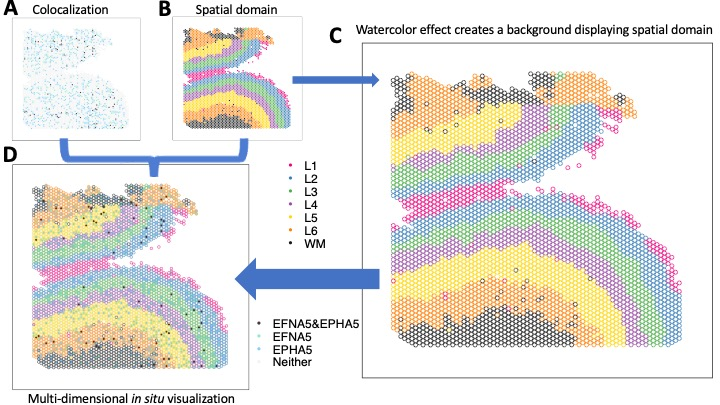

Projects
My research concentrates on developing statistically rigorous and computationally scalable machine-learning methods, as well as open-source software, that integrates population-scale multi-omics data to uncover functional mechanisms that explain disease heterogeneity.
Scalable machine learning models for precision medicine
Heterogeneity in treatment response and disease progression requires individualized health care informed by data-driven evidence. Deeply embedded in biomedical data, the key to successful precision medicine requires timely advances in statistically sounding machine learning models and AI tools that extract insights from the complex and high-dimensional biomedical data.
Variable and functional selection using spike-and-slab LASSO
I develop Bayesian statistical learning methods and scalable algorithms for high-dimensional data analysis, with the application to biomedical data that includes, but not limited to, population-level clinical abd -omics data. Specifically, I introduced new Bayesian hierarchical models, following the spike-and-slab LASSO framework, to select important nonlinear signals for high-dimensional data and predict disease risk of continuous, binary, count and survival outcomes. To overcome computational burden of training Bayesian models, I develop novel optimization-based model-fitting algorithms to improve computational scalability, and open-source software to make the analysis accessible to everyone.
- Guo B, Jaeger BC, Rahman AKMF, Long DL, Yi N. (2022). Spike-and-slab LASSO generalized additive models and scalable algorithms for high-dimensional data analysis. Statistics in Medicine.
- Guo B, Yi N. (2022). A scalable and flexible Cox proportional hazard model for high-dimensional survival prediction and functional selection. arXiv.
- Guo B, Yi N. (2022). The R Package BHAM: Fast and scalable Bayesian hierarchical additive model for high-dimensional data. arXiv.
- Tang Z, Lei S, Zhang X, Yi Z, Guo B, Chen JY, Shen Y, Yi N. (2019). Gsslasso Cox: a Bayesian hierarchical model for predicting survival and detecting associated genes by incorporating pathway information. BMC bioinformatics.
- Yi N, Tang Z, Zhang X, Guo B. (2019). BhGLM: Bayesian hierarchical GLMs and survival models, with applications to genomics and epidemiology. Bioinformatics.
Multivariate random forests to estimating heterogeneous treatment effects

Precision healthcare motivates tailored treatments that take individual heterogeneity, environment, and lifestyles into consideration. The estimation of individualized treatment effect poses significant methodological and computational challenges, especially jointly for multiple health outcomes of interest. We propose a random forest model, MOTEF, that estimates individualized treatment effects of multivariate outcomes simultaneously, accounting for pre- and post-treatment covariates.
- Guo B, Holscher H, Auvil L, Welge M, Bushell C, Novotny J, Baer D, Burd N, Khan N, Zhu R. (2021). Estimating Heterogeneous Treatment Effect on Multivariate Responses Using Random Forests. Statistics in Biosciences.
Computational Omics
Spatially-resolved genomics
The cortical layers of the human neocortex were classically defined by histological distinction of cell types according to size and shape. However, emerging single-cell and spatially-resolved transcriptomic technologies have facilitated the identification of molecularly defined cell populations and spatial domains that move beyond classic cell type definitions and cytoarchitectural boundaries. Assigning gene expression to distinct anatomical subdivisions and cell populations within the human brain improves the understanding of brain regions and how they contribute to brain disorders. I led the quantitative investigation of 30 Visium Samples and single-nucleus RNA seq collected from 19 brain samples, where integrative cell-cell communication identified FYN-EFNA5-EPHA5 signaling pathway associated with schizophrenia. I also developed a novel visualization framework that simultaneous display disparage variables following Gestalt principles, allowing to in situ visualize of differential expression across various spatial domains.
- Huuki-Myers L, Spangler A, Eagles N, Montgomery KD, Kwon SH, Guo B, Grant-Peters M, Divecha HR, Tippani M, Sriworarat C, Nguyen AB, Ravichandran P, Tran MN, Seyedian A, Hyde TM, Kleinman JE, Battle A, Page SC, Ryten M, Hicks SC, Martinowich K, Collado-Torres L, Maynard KR. (2023). Integrated single cell and unsupervised spatial transcriptomic analysis defines molecular anatomy of the human dorsolateral prefrontal cortex. Science.
Computational methods for spatial genomics data

The development of computational methods for processing, integrating, analyzing, and visualizing spatial genomics data is crucial in advancing our understanding of complex biological systems. Spatial genomics provides valuable insights into the spatial organization of cells and their interactions within tissues. Computational methods enable the extraction of meaningful patterns, unveiling the spatial relationships between genes and cells.
- Guo B, Huuki-Myers LA, Grant-Peters M, Collado-Torres L, Hicks SC. (2023). escheR: Unified multi-dimensional visualizations with Gestalt principles. Bioinformatics Advances.
Microbiome
Pendegraft AH, Guo B, Yi N. (2019). Bayesian hierarchical negative binomial models for multivariable analyses with applications to human microbiome count data. PloS one.
Zhang X, Guo B, Yi N. (2020). Zero-Inflated gaussian mixed models for analyzing longitudinal microbiome data. Plos one.
Population Health
The Reasons for Geographic and Racial Differences in Stroke
Black Americans under age 75 were more than twice as likely to die from stroke than were non-Hispanic white Americans, while people who lived in the South had a 40 percent higher risk of dying from stroke than their counterparts in other parts of the United States. Understanding the cause of the disparity is imperative to effective interventions and policy change. To understand the health disparity, The Reasons for Geographic and Racial Differences in Stroke (REGARDS) project recruited 30,239 participants who are 45 years or older between January 2003 and October 2007 and continues following up with them. I led the quantitative investigation of multiple possible causal pathways mediating the health disparity in cardiovascular disease and its comorbidity.
Kamin Mukaz D, Guo B, Long D, Judd S, Plante T, McClure L, Wolberg A, Zakai N, Howard G, Cushman M. D-dimer and the risk of hypertension: The REasons for Geographic And Racial Differences in Stroke Cohort Study. Research and Practice in Thrombosis and Haemostasis.
Peper KM, Guo B, Leann Long D, Howard G, Carson AP, Howard VJ, Judd SE, Zakai NA, Cherrington A, Cushman M, Plante TB. C-reactive Protein and Racial Differences in Type 2 Diabetes Incidence: The REGARDS Study. J Clin Endocrinol Metab.
Plante T, Long D, Guo B, Howard G, Carson A, Howard V, Judd S, Jenny N, Zakai N, Cushman M. C-Reactive Protein and Incident Hypertension in Black and White Americans in the REasons for Geographic And Racial Differences in Stroke (REGARDS) Cohort Study. American Journal of Hypertension.
Study design & mediation analysis
Long DL, Guo B, McClure LA, Jaeger BC, Tison SE, Howard G, Judd SE, Howard VJ, Plante TB, Zakai NA, Koh I, Cheung KL, Cushman M. Biomarkers as MEDiators of racial disparities in risk factors (BioMedioR): Rationale, study design, and statistical considerations. Ann Epidemiol.
Cui J, Guo B, Tiwari H, Rahman AKMF, Sims AM, Long DL. Comparison of three mediation methods with survival outcomes via simulation study. In review.